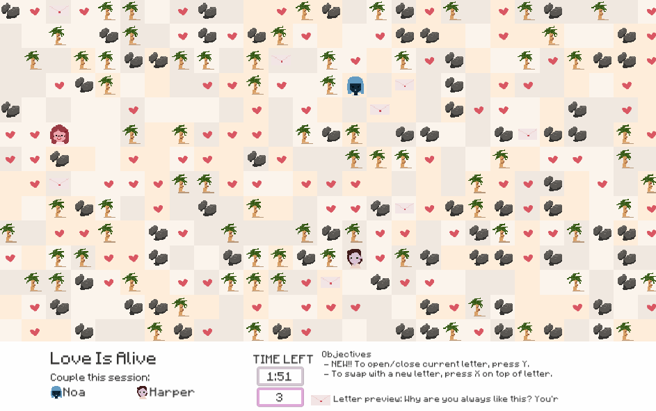
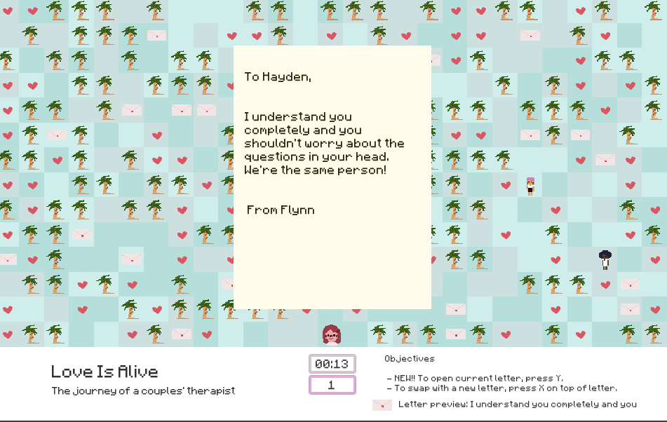

This is a game I submitted for LD46 game jam.
Play at: https://hinerz.itch.io/love-is-alive
GitHub: https://github.com/hinasakazaki/LD46
First, a .gif to start off things… 
In the midst of shelter-in-home, I’ve been watching a reality show called Love is Blind like many other consumers. In addition to that, I’ve been watching “Couples Therapist Reacts to Love is Blind” on YouTube and it’s been surprisingly insightful! link here
Having been shut in with my spouse for over a month now, I am increasingly thankful for vulnerable moments, and aware of walls that we put up when we are unhappy.
This game is a playful take on what I guess some couples therapists do in their job – sort through anger, defenses, and find the true emotions and make sure there’s two way communication.
In addition, I just wanted to experiment with procedurally generated maps, so that’s what this ended up being. Just a one screen game about a couples therapy session.
I didn’t have too much time to polish up the letters, so you might find it not perfect – but if you had watched Love Is Blind, I think you might recognize some of the sentiments!
A longer gif:

More screenshots:

Some progress pics
Tech wise, it was pretty straightforward. The most fun part was implementing A* path finding.